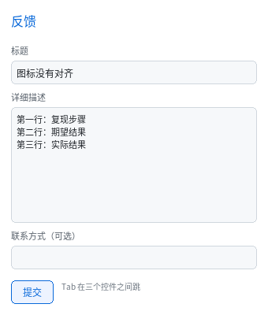

多行输入与表单
上一章讲完 <pre> 与上下标，这一章补上最后一个表单控件：<textarea>。

完整程序：example/13_form/main.c
一句话说清它和 <input> 的关系
同一套输入池、同一个缓冲区模型，区别只有三处：
<input> |
<textarea> |
|
|---|---|---|
| 缓冲容量 | QL_CFG_UI_INPUT_LEN（默认 96） |
QL_CFG_UI_TEXTAREA_LEN（默认 512） |
| 池 | 每个框一份，内联在结构体里 | 共享一块 arena，按槽位切 |
white-space |
默认 nowrap |
默认 pre-wrap |
| 光标 | 单行字节偏移 | （视觉行, 行内 x）+ sticky 列 |
| Enter | 不插换行（只触发回调） | 插入 '\n' |
结构体是这个样子（QLUIRoot.ta_arena 就是那块共享 arena）：
struct QLUIInput {
QLUINodeRT *node;
char *buf; /* 单行 → line[]；多行 → arena 里的一段 */
uint16_t len, caret, sel;
ql_coord_t scroll_x, scroll_y;
uint8_t multiline;
ql_coord_t want_x; /* 上下键记住的横向位置 */
char line[QL_CFG_UI_INPUT_LEN];
};
为什么分池：8 个单行框各多背 400 字节在 MCU 上不能接受；反过来把多行缓冲
缩到 96 字节又装不下几行字。两块池各自按需分配 —— 界面里没有 <textarea>
时 ta_arena == NULL，零字节。
#ifndef QL_CFG_UI_TEXTAREA_MAX
#define QL_CFG_UI_TEXTAREA_MAX 2 /* 一个界面最多几个 */
#endif
#ifndef QL_CFG_UI_TEXTAREA_LEN
#define QL_CFG_UI_TEXTAREA_LEN 512 /* 单个最多多少字节 */
#endif
写一个能填的表单
<label>详细描述</label>
<textarea id="d">第一行：复现步骤
第二行：期望结果</textarea>
label { display: block; font-size: 11px; color: #7A8794; }
textarea { display: block; width: 300px; height: 96px; padding: 6px;
border-width: 1px; border-radius: 4px;
background-color: #11161F; color: #E6EDF3;
font-size: 11px; line-height: 16px; }
textarea:focus { border-color: #7CE0FF; }
UA 默认已经给了 display: inline-block / width: 200px / height: 60px /
white-space: pre-wrap / font-family: monospace / 一圈边框。
rows / cols 属性不解析 —— HTML 属性进不了样式表，改尺寸请用 CSS。
<textarea> 开始标签后紧接的一个换行同样会被丢掉（和 <pre> 同一条规则），
所以上面那段 > 后面直接换行写内容不会多出空行。
键盘行为
| 键 | 行为 |
|---|---|
| Enter | 插入 '\n'（走和普通字符同一条插入路径） |
| Backspace | 行首退格会合并两行（就是删掉了那个 \n） |
| ↑ / ↓ | 上一行 / 下一行，记住横向位置 |
| Home / End | 本行首尾（不是全文首尾） |
| 鼠标点击 | 按 y 定行、按 x 定列 |
行距只有一个来源：位置换算（点哪落哪、上下键、光标绘制、滚动量）全部走
text_line_h_of(style, font) —— 有 CSS line-height 就用它，否则用字体行高。
用错这一个值就会出"越往下的行光标偏得越多"：字体行高 19px、line-height: 16px
时，每行多偏 3px，第 4 行就差出小半行。光标的高度也取字形的
ascent + descent，并跟着半行距一起挪（line-height 比字形高时上下各分一半，
比字形矮时是负的），这样它总是盖在字上。
sticky 列这件事值得单独说：从长行移到短行时光标会被夹到行尾，但再移回长行
应该回到原来的列，而不是停在短行的行尾。所以有个 want_x：
- 任何非上下键的光标移动都会把它置为
-1（失效，下次重新量）； - 上下键先看
want_x，失效了就量当前行内 x 并记住。
单行输入框的 ↑/↓ 不被吃掉，它们会继续往上传（给外层滚动容器翻页）。
纵向滚动
内容比盒子高时，光标移动会把视图滚到能看见它：
if (cy - in->scroll_y < 0)
in->scroll_y = cy; /* 上方被挡住 */
else if (cy + lh - in->scroll_y > cb.h)
in->scroll_y = cy + lh - cb.h; /* 下方被挡住 */
横向同理（单行框也受益 —— 长文本时光标不再跑出框外）。
删光内容后光标还在原位：视觉行少了，可滚范围就变小；所有改缓冲的路径 （插入、删字、删选区、剪切、
set_value）都以input_scroll_to_caret()收尾， 里面会把scroll_y夹回input_scroll_max()。少了这一步，滚到底再 Ctrl+A 删光，光标会被画到内容盒上面去 —— 看起来就是"文字没了，光标也不见了"。
滚动条与滚轮
内容的可滚范围是"总视觉行数 × 行高 − 内容盒高"（input_scroll_max()）。
多行输入框的内容是它自己画的，没有子节点，所以它不走容器那套
overflow: auto + node->scroll_y，偏移存在 QLUIInput.scroll_y 里：
- 内容超高时在内容盒右缘画一根滑块（和容器滚动条同一个
scrollbar_thumb()， 位置由in->scroll_y决定）； - 滚轮事件先给多行输入框吃（
input_scroll_by()），滚到尽头再把剩下的 交给父容器 —— 与浏览器一致：文本框滚完，页面接着滚。
/* 滚轮处理里，找最近的 textarea 祖先，先让它滚 */
for (QLUINodeRT *n = hit; n != NULL; n = n->parent) {
struct QLUIInput *in = input_of(ui, n);
if (in != NULL && in->multiline) {
dy -= input_scroll_by(in, dy); /* 返回真正用掉的距离 */
break;
}
}
这里有个坑：
nearest_scrollable()找不到 textarea（它不是可滚动容器）， 只靠容器那条路的话，滚轮在文本框上完全没反应。
拖选：按 (x, y) 定位，拖出框外会自己滚
鼠标拖选和"点哪落哪"必须走同一条定位路径：
const uint16_t pos = caret_at_xy(font, in, cb.w, lh,
x - cb.x + in->scroll_x,
y - cb.y + in->scroll_y);
只拿 x 按单行折算字节偏移的话，单行框看着没问题（一行就是全部），
多行框一拖到第二行选区和鼠标就分家了 —— 因为同一个 x 在每一行都对，
差别全在 y 上。
指针拖到内容盒上方/下方（y < cb.y 或 y > cb.y + cb.h）时每帧按一次行高
滚动，再重新定位光标，这样长文本能跨屏选。
读值与写值
和 <input> 完全一样，不需要区分：
printf("%s\n", ql_ui_input_value(ui, ta)); /* 多行值里带真实 '\n' */
ql_ui_input_set_value(ui, ta, "重新填\n两行"); /* 光标移到末尾 */
ql_ui_set_input_cb() 的回调也是同一个 —— 拿到的 value 里含换行。
一个完整的提交回路
static void on_input(QLUIRoot *ui, QLUINodeRT *node, const char *value, void *user)
{
(void)ui; (void)node;
printf("当前内容：\n%s\n", value); /* 多行值原样打印 */
}
/* 建好界面之后 */
ql_ui_set_input_cb(ui, on_input, NULL);
没有剪贴板、没有 IME、光标不闪 —— 三条限制与单行输入框完全一致（见第 10 章）。
Linux 上中文要走输入法：X11 后端走 XIM。窗口后端（GL）和纯 CPU 的 X11 显示后端都接了同一套，四件事缺一不可：
- 进程调过
setlocale(LC_ALL, "")（例程在ex_setup_locale()里做）；XSetLocaleModifiers("")—— 读XMODIFIERS并初始化 XIM 的传输层；- 窗口选上
FocusChangeMask，收到FocusIn后XSetICFocus()；- 每个事件先过
XFilterEvent()，字符走Xutf8LookupString()。第 2 条最阴：漏了它
XOpenIM照样成功、IC 也建得出来，但XFilterEvent()永远返回 False —— 现象是"ibus/fcitx 明明在跑，拼音敲进去只有字母"。 第 3 条漏了则输入法完全不接管按键（它只给有焦点的输入上下文转事件）。XIM 不可用时退回
XLookupString，那时只有 Latin-1；裸 X（没有输入法）就 只能用ql_ui_input_set_value()从程序里填。Wayland 原生窗口还没有zwp_text_input_v3（见《对比与取舍》）。
与浏览器不同的地方
rows/cols属性不解析，用 CSS 定尺寸（UA 默认 200×60）。- 不折行时超长的单行会横向滚动，而不是撑出盒子（
pre-wrap默认是折行的， 所以只有你显式写white-space: pre才会遇到）。 maxlength不解析，长度上限是编译期的QL_CFG_UI_TEXTAREA_LEN。spellcheck/placeholder不做（placeholder在<input>上也没做）。
到这里为止
能力包 TEXT（6 个）与 CONTROL（补齐 textarea）都完成了。
剩下的是 TABLE 包 —— 10 个标签、唯一要从零写一套布局算法的一期，
见 开发规划。